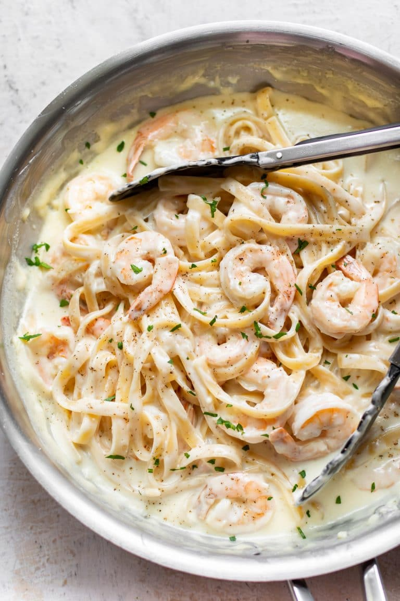

Shrimp Alfredo

Description
Delicious shrimp alfredo I can enjoy any day of the week, month, of year. Instant classic in my house.
Ingredients
- 1 pound uncooked (31-40/pound size) shrimp thawed & peeled, tails optional
- 8 ounces uncooked fettuccine
- 2 tablespoons butter
- 4 ounces cream cheese (I used 1/2 block Philly) softened & cut into smaller pieces
- 3/4 cup heavy/whipping cream
- 1/4 cup chicken broth
- 2 large cloves garlic minced
- 1 cup freshly grated parmesan cheese
- Salt & pepper to taste
- Prep your shrimp (if frozen, add them to a colander and run under cool water until thawed).
- Start boiling a salted pot of water for the fettuccine. Cook it al dente according to package directions.
- Meanwhile, add the butter, cream cheese, cream, chicken broth, and garlic to a skillet over medium heat.
Once the butter has melted and the pan has heated up, you can use your spoon to help the cream cheese melt into the sauce.
This will take a couple of minutes.
- When the cream cheese has been incorporated into the sauce, let it gently bubble for 5 minutes until the sauce has reduced somewhat.
You can give it the occasional stir. I grate the parmesan cheese while it's cooking.
- Stir the parmesan into the sauce. Let it cook for about a minute.
- Add the shrimp to the pan. Cook for 5-6 minutes, stirring occasionally.
- Season with salt & pepper as needed. Toss with the drained pasta and serve immediately.
Home